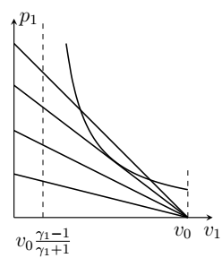
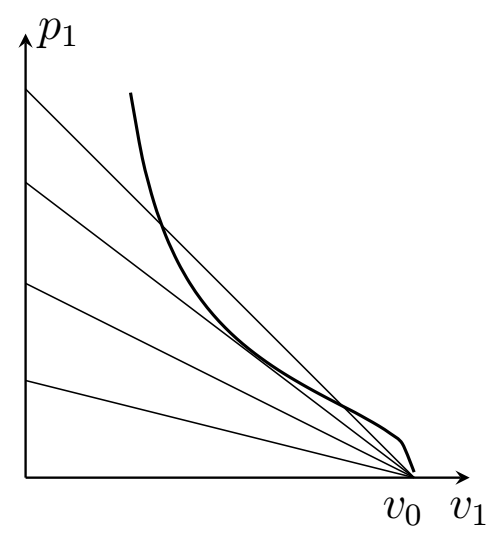

Y23 (2023) — English translation
Let us move to a reference frame that moves with the velocity of the shock wave front $c$. In this CO, a gas with pressure $p_0$ and density $\rho_0$ impinges on a stationary front, and after the front moves with a certain speed $u$. Throughout the problem we will use this reference system. In time $dt$, mass $\rho_0 c dt$ passes through a unit area of the flow, and mass $\rho_1 u dt$ exits, therefore the law of conservation of mass $$ \rho_0 c = \rho_1 u. $$Momentum можно поrayandть, домножив массу на соответствующую velocity. At the same time momentum gasа изменяется for/at прохождении волнового фронта за счет сности давлений на quantity $(p_0 - p_1) dt$, therefore $$ (\rho_1 u^2 - \rho_0 c^2 )dt = (p_0 - p_1 )dt, $$and finally $$ p_0 + \rho_0 c^2 = p_1 + \rho_1 u^2. $$Eliminating velocity $u$ с помощью закона сохранения массы: $$ u = c \frac{\rho_0}{\rho_1} $$and we get $$ p_0 + \rho_0 c^2 = p_1 + \frac{\rho_0^2}{\rho_1} c^2, $$hence velocity волны $$ c = \sqrt{\frac{p_1 - p_0}{\rho_1 - \rho_0} \frac{\rho_1}{\rho_0}}. $$
Let us consider the mass $dm$ of gas crossing the boundary. Its kinetic energy changes by $$ \Delta E_{\text{к}} = \left( \frac{u^2}{2} -\frac{c^2}{2}\right) dm, $$внутренняя energy на $$ \Delta U = C_V \frac{dm}{\mu} (T_1 - T_0 )= C_V \frac{dm}{R} \left( \frac{p_1}{\rho_1} - \frac{p_0}{\rho_0}\right). $$Here $C_V$ – молярная heat capacity gasа for/at постоянном volumeе, а temperature выражена via/through pressure с помощью уравнения состояния идеального gasа. Над gasом совершена work $$ A =p_0 \frac{dm}{\rho_0} -p_1 \frac{dm}{\rho_1}. $$Therefore energy conservation law \begin{align*} A &= \Delta E_{\text{к}} + \Delta U, \\ p_0 \frac{dm}{\rho_0} -p_1 \frac{dm}{\rho_1}& = \left( \frac{u^2}{2} -\frac{c^2}{2}\right) dm + C_V \frac{dm}{R} \left( \frac{p_1}{\rho_1} - \frac{p_0}{\rho_0}\right). \end{align*} Сократим на массу and перенесем все terms, относящиеся к gasу до прохождения волнового фронта в одну сторону: $$ \frac{p_0}{\rho_0} + \frac{C_V}{R} \frac{p_0}{\rho_0} + \frac{c^2}{2} = \frac{p_1}{\rho_1} + \frac{C_V}{R} \frac{p_1}{\rho_1} + \frac{u^2}{2}. $$Это соratio – equation Бернулли, в котором внутренняя energy gasа выражена via/through pressure and density. Note that $$ \frac{C_V}{R} + 1 = \frac{C_P}{R} = \frac{C_P}{C_P-C_V} = \frac{\gamma}{\gamma - 1}, $$а also substituting expression for скорости $u$ via/through velocity волнового фронта $c$ and we get
Let us substitute the expression for the wave front speed into the relation from the previous paragraph: $$ \frac{\gamma}{\gamma - 1}\left( \frac{p_1}{\rho_1}- \frac{p_0}{\rho_0}\right) = \frac{1}{2}\left(1-\frac{\rho_0^2}{\rho_1^2} \right) \frac{p_1- p_0}{\rho_1 - \rho_0}\frac{\rho_1}{\rho_0}. $$Упростим правую часть $$ \frac{\gamma}{\gamma - 1}\left( \frac{p_1}{\rho_1}- \frac{p_0}{\rho_0}\right) = \frac{\rho_1 + \rho_0}{2\rho_0 \rho_1} (p_1 - p_0) , $$сгруппируем terms с $p_0$ and с $p_1$: $$ p_1\left(\frac{\gamma}{\gamma - 1} \frac{1}{\rho_1} -\frac{\rho_1 + \rho_0}{2 \rho_0 \rho_1} \right) = p_0\left(\frac{\gamma}{\gamma - 1} \frac{1}{\rho_0} - \frac{\rho_1 + \rho_0}{2 \rho_0 \rho_1} \right), $$hence требуемое ratio $$ \frac{p_1}{p_0}= \frac{\frac{\gamma}{\gamma - 1} \rho_1 - \frac{1}{2}(\rho_0 + \rho_1)}{\frac{\gamma}{\gamma - 1} \rho_0 - \frac{1}{2}(\rho_0 + \rho_1)} = \frac{2 \gamma k - (\gamma -1) (1 + k)}{2 \gamma - (\gamma - 1)(1 + k) }. $$
From the formula for the previous paragraph we see that the pressure $p_1$ goes to infinity at $k = \dfrac{\gamma + 1}{\gamma -1}$. This is the maximum value $k$. For diatomic gas $\gamma = 7/5$, $k_{max} = 6$.
The law of conservation of energy is similar to point $\mathrm{B3}$, but you need to add the released heat $q dm$ to the work of pressure forces and take into account that the molar heat capacities of the original gas and reaction products differ: $$ p_0 \frac{dm}{\rho_0} -p_1 \frac{dm}{\rho_1} + q dm = \left( \frac{u^2}{2} -\frac{c^2}{2}\right) dm + C_{V1} \frac{dm}{R} \frac{p_1}{\rho_1} - C_{V0} \frac{dm}{R} \frac{p_0}{\rho_0}. $$Let us express теплоемкости gasов via/through показатели адиабаты, velocity gasа $u$ through the wave front velocity and rearrange the terms similarly to part A:
In the strong wave approximation, the wavefront speed is $$ c^2 = \frac{p_1}{\rho_1 - \rho_0} \frac{\rho_1}{\rho_0} = p_1 \frac{v_0^2}{v_0 - v_1}. $$Substituting его в energy conservation law, we neglect at the same time terms $\frac{p_0}{\rho_0}$: $$ q + p_1 \frac{v_0^2}{2(v_0 - v_1)} = \frac{\gamma_1}{\gamma_1 -1}p_1 v_1 + \frac{v_1^2 }{v_0^2} p_1 \frac{v_0^2}{2(v_0 - v_1)} . $$Hence $$ p_1 \left( \frac{\gamma_1}{\gamma_1 -1} v_1 + \frac{v_1^2 - v_0^2}{2 (v_0 - v_1)}\right) = q, $$$$ p_1 = \frac{q}{\frac{\gamma_1}{\gamma_1 -1} v_1 - \frac{1}{2} (v_0 + v_1)} = \frac{q}{v_0} \frac{2}{\frac{\gamma_1 + 1}{\gamma_1 -1} \frac{v_1}{v_0} - 1} $$
The graph of the dependence $p_1(v_1)_{\text{дет}}$ is a hyperbola whose asymptote is at $v_1 = v_0 \dfrac{\gamma_1 -1}{\gamma_1 + 1}$. The dependence of pressure on specific volume, expressed in terms of the speed of sound, has the form $$ p_1(v_1)_{\text{иmп}} = \frac{c^2}{v_0} \left( 1 - \frac{v_1}{v_0}\right), $$ее график - линейная function, обращающаяся в 0 for/at $v_1 = v_0$.

Let us equate the expressions for pressure through the wave speed and from the shock adiabatic equation. $$ \frac{c^2}{v_0} \left( 1 - \frac{v_1}{v_0}\right)= \frac{2q}{v_0} \frac{1}{\frac{\gamma_1 +1}{\gamma_1 - 1} \frac{v_1}{v_0} - 1}, $$we get квадратное equation на ratio $v_1/v_0$: $$ \left(1- \frac{v_1}{v_0} \right)\left( \frac{\gamma_1 +1}{\gamma_1 - 1} \frac{v_1}{v_0} - 1\right) = \frac{2q}{c^2}. $$Это equation будет иметь единственное solution, if правая часть equals максимальному значению квадратичной функции в левой части. Это максимальное value достигается for/at $$ \frac{v_1}{v_0} = \frac{\gamma_1}{\gamma_1 + 1}, $$соответствующее value equals $$ \frac{2q}{c^2} = \frac{1}{\gamma_1^2 -1}, $$hence velocity волны $$ c = \sqrt{2q (\gamma_1^2 -1)} $$and pressure $$ p_1 = \frac{c^2}{v_0}\left( 1 - \frac{v_1}{v_0}\right) = \frac{2q (\gamma_1^2-1)}{v_0} \frac{1}{\gamma_1 + 1} = \frac{2q}{v_0} (\gamma_1 -1). $$
Second solution. The equation will have a unique solution if the dependence curves $p_1(v_1)$ touch each other. Let us equate the expressions for pressures and their derivatives with respect to $v_1$:
\begin{align*} &\frac{c^2}{v_0} \left( 1 - \frac{v_1}{v_0}\right)= \frac{2q}{v_0} \frac{1}{\frac{\gamma_1 +1}{\gamma_1 - 1} \frac{v_1}{v_0} - 1},\\ &\frac{c^2}{v_0^2} = \frac{2q}{v_0^2} \frac{\gamma_1 +1}{\gamma_1 -1}\frac{1}{\left(\frac{\gamma_1 +1}{\gamma_1 - 1} \frac{v_1}{v_0} - 1\right)^2}. \end{align*} Let's express the wave speed from the second equation and substitute it into the first: $$ c^2 = 2q \frac{\gamma_1 +1}{\gamma_1 -1}\frac{1}{\left(\frac{\gamma_1 +1}{\gamma_1 - 1} \frac{v_1}{v_0} - 1\right)^2}, $$$$ \frac{\gamma_1 +1}{\gamma_1 -1}\frac{1 - \frac{v_1}{v_0}}{\left(\frac{\gamma_1 +1}{\gamma_1 - 1} \frac{v_1}{v_0} - 1\right)^2} = \frac{1}{\frac{\gamma_1 +1}{\gamma_1 - 1} \frac{v_1}{v_0} - 1}, $$hence we get equation на ratio $v_1/ v_0$: $$ \frac{\gamma_1 +1}{\gamma_1 -1}\left(1 - \frac{v_1}{v_0} \right) = \frac{\gamma_1 +1}{\gamma_1 - 1} \frac{v_1}{v_0} - 1, $$from которого we find $$ v_1 = v_0 \frac{\gamma_1}{\gamma_1 + 1}. $$Substituting это value в expression for $c^2$, we get answerы for $c$ and then $p_1$.
The reaction products are a mixture of monatomic, diatomic and polyatomic gases in equal proportions (by amount of substance), therefore the adiabatic index (indices 1,2,3 mark the values related to monatomic, diatomic and polyatomic gas, respectively) $$ \gamma_1 = \frac{C_{P1} + C_{P2} + C_{P3}}{C_{V1} + C_{V2} + C_{V3}} = \frac{10}{7}. $$Then velocity волны можно рассчитать по формуле from предыдущего partа. At the same time нужно учесть, что for/atведено количество тепла, for/atходящееся на единицу массы водорода. Согласно уравнению реакции, на 1 kg водорода for/atходится 8 kg кислорода, therefore нужно использовать value $q$ is 9 times less.
Let's write down the law of conservation of energy from point $\mathrm{B2}$, replacing $q = I_0 v_0/c$ in it, expressing the speed of the wave $c$ through pressure and specific volumes: $$ I_0 v_0 \frac{\sqrt{1- v_1/v_0}}{\sqrt{p_1 v_0}}+ p_1 \frac{v_0^2}{2(v_0 - v_1)} = \frac{\gamma_1}{\gamma_1 -1}p_1 v_1 + \frac{v_1^2 }{v_0^2} p_1 \frac{v_0^2}{2(v_0 - v_1)} . $$Transforming это equation $$ I_0 \frac{\sqrt{v_0 -v_1}}{\sqrt{p_1}} =\frac{ p_1 v_0}{2} \left( \frac{\gamma_1 +1}{\gamma_1 - 1} \frac{v_1}{v_0} - 1\right) , $$ from where we get
Let us again write down the equality of the pressures obtained from the formula for the light-detonation adiabat and from the speed of the wave: $$ \left( \frac{2I_0 \sqrt{v_0 -v_1}}{\frac{\gamma_1 +1}{\gamma_1 - 1} v_1 - v_0} \right)^{2/3} = \frac{c^2}{v_0} \left(1 - \frac{v_1}{v_0} \right). $$Transforming это equation: $$ \left(1 - \frac{v_1}{v_0} \right)^{2/3} \left( \frac{\gamma_1 +1}{\gamma_1 - 1} v_1 - v_0 \right)^{2/3} =\frac{ (2 I_0 v_0)^{2/3} }{c^2}. $$Возводя equation в степень $3/2$, снова we get квадратное equation на $v_1/v_0$: $$ \left(1- \frac{v_1}{v_0} \right)\left( \frac{\gamma_1 +1}{\gamma_1 - 1} \frac{v_1}{v_0} - 1\right) = \frac{2I_0 v_0}{c^3}. $ $Левая часть такая же, как и в случае ударной волны, поэтому максимум достигается при $$ v_1 = \frac{\gamma_1}{\gamma_1 + 1} v_0, $$а скорость волны можно найти из соотношения $$ \frac{2 I_0 v_0}{c^3} = \frac{1}{\gamma_1^2 -1}, \quad c = \left(2 I_0 v_0 (\gamma_1^2 -1) \right)^{1/3}. $$Тогда давление $$ p_1 = \frac{\left(2 I_0 v_0 (\gamma_1^2 -1) \right)^{2/3}}{v_0} \frac{1}{\gamma_1+ 1} = \left( \frac{4 I_0^2}{v_0}\frac{(\gamma_1 -1)^2}{\gamma_1 + 1}\right)^{1/3}. $$Для сравнения также построим на одном графике светодетонационную адиабату и зависимости $p_1(v_1) $ at constant speed of sound.

Let's use the formula for the wave front speed from the previous paragraph, substitute the intensity value $I_0 = P/\pi r^2 \sim 10^{15}~\text{W}/\text{m}^2$ and the value $v_0 = 1/\rho_0$ into it.